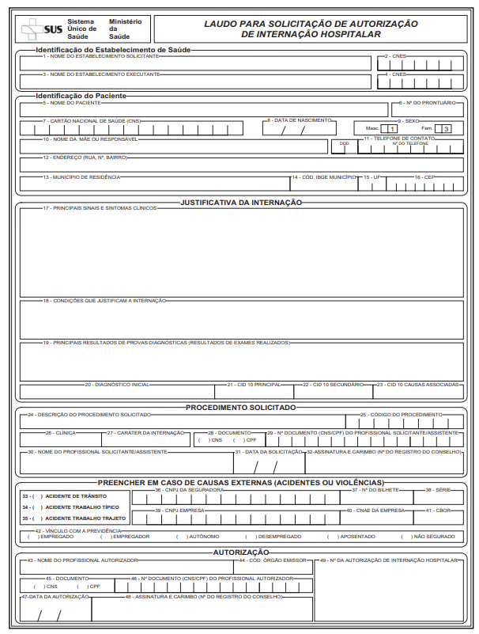

Módulo 3 | Aula 2
Sistemas de Informações de Produção
Sistema de Informações Hospitalares (SIH)
O Sistema de Informações Hospitalares (SIH) é um dos sistemas mais tradicionais e robustos do SUS. Ele reflete o cenário das internações no Brasil. Por meio dele é realizada a coleta, o processamento, a sistematização e a disponibilização dos dados sobre as internações hospitalares realizadas no âmbito do SUS em todo o Brasil. Embora seja originalmente administrativo, o SIH é indispensável para a epidemiologia devido ao seu grande volume, agilidade na disponibilização e cobertura nacional. Esse sistema é usado com sucesso para descrever padrões de morbidade, tendências temporais e desigualdades regionais no acesso à saúde (Bittencourt; Camacho; Leal, 2006).
Antes de analisarmos sua importância atual, vale destacar sua evolução. O SIH se origina do antigo Sistema Nacional de Controle e Pagamento de Contas Hospitalares (SNCPCH), que usava a Guia de Internação Hospitalar (GIH) para controle de pagamentos. Devido a dificuldades de processamento manual e fraudes, esse sistema foi substituído pelo Sistema de Assistência Médico-Hospitalar da Previdência Social (SAMHPS) em 1981. Foi apenas em 1991, após a Constituição de 1988 e a Lei Orgânica da Saúde, que o sistema passou a ser conhecido por seu nome atual, sob a gestão do Ministério da Saúde (Levcovitz; Pereira, 1993).
A coleta de dados do SIH gira em torno de um documento-chave: a Autorização de Internação Hospitalar (AIH). É nela que são registradas mais de 50 variáveis, incluindo identificação do paciente, procedimentos realizados, diagnósticos (CID) e valores de repasse. A partir desse documento é que são autorizadas as internações e descritas informações sobre o paciente e os procedimentos clínicos e cirúrgicos que justificam sua internação. O fluxo se inicia com o laudo para Solicitação de AIH, preenchido pelo médico assistente, que deve ser autorizado pelo gestor local para, então, gerar a AIH.
Figura 2 - Laudo para solicitação de AIH.

Fonte: Brasil (2007).
Existem dois tipos principais de AIH que você precisa conhecer:
AIH Tipo 1 (Inicial): a AIH tipo 1 foi estabelecida em abril de 1992 e é gerada na internação do paciente, com validade de 15 (quinze) dias, a contar da data da emissão, exceto para as AIHs com diagnóstico de parto emitidas para gestantes, que têm validade até a data do parto.
AIH Tipo 5 (Longa Permanência): a AIH tipo 5 é utilizada para garantir a continuidade do tratamento. Ela deve ser renovada mensalmente e, obrigatoriamente, manter o número da AIH Inicial (Tipo 1) que a originou, garantindo o rastreamento do paciente (Brasil. Ministério da Saúde, 2007).
Importância
O SIH é fundamental para a gestão hospitalar e o financiamento do sistema, pois processa o pagamento das internações realizadas pelo SUS em hospitais públicos e conveniados. Diferentemente das estatísticas vitais, o tempo de processamento até a disponibilização dessas informações é mais oportuno para apoiar o planejamento e a tomada de decisões.
Além da função administrativa/financeira, ele possui enorme valor epidemiológico. Ao analisar o SIH, conseguimos entender o perfil de morbidade hospitalar (quais doenças mais causam internações), além dos custos associados a cada tipo de tratamento. Ele é a principal fonte para calcular indicadores clássicos, como a taxa de morbidade hospitalar no âmbito do SUS, a média de permanência das internações, entre outros.
Importante!
O SIH cobre mais de 80% das internações hospitalares do país, sendo a principal fonte de dados sobre a assistência hospitalar brasileira (Marques et al., 2025)
Dados coletados
As variáveis do SIH são predominantemente administrativas e financeiras, mas possuem forte aplicação epidemiológica. De acordo com o informe técnico de disseminação de informações do SIH, elaborado pelo DATASUS, elas podem ser categorizadas em quatro grandes grupos:
Variáveis demográficas e sociais: perfil da população atendida
Identificação: Sexo (SEXO) e Data de Nascimento (NASC).
Geografia: município de Residência (MUNIC_RES) e CEP do paciente (CEP) — fundamentais para diferenciar onde o paciente mora de onde ele foi atendido.
Raça e Etnia: campos RACA_COR e ETNIA.
Escolaridade e Família: grau de instrução (INSTRU) e número de filhos (NUM_FILHOS).
Variáveis Clínicas e Epidemiológicas: descrevem o motivo e o desfecho da internação
Diagnósticos:
Principal: código CID-10 que motivou a internação (DIAG_PRINC).
Secundário: comorbidades ou complicações (DIAG_SECUN e DIAGSEC1 a 9)
Causas de morte: CID da morte (CID_MORTE) em caso de óbito.
Procedimentos: o procedimento realizado (PROC_REA) e o solicitado (PROC_SOLIC).
Desfechos e gravidade:
Motivo de saída (alta, óbito, transferência) indicado pelo campo COBRANCA ou MORTE.
Uso de UTI: dias de UTI (UTI_MES_TO) e tipo de UTI (MARCA_UTI).
Variáveis Administrativas e de Gestão: estrutura do serviço e da internação
Estabelecimento: CNPJ (CGC_HOSP) e código CNES (CNES) do hospital executante.
Natureza Jurídica: classificação legal do hospital (NAT_JUR).
Tempo: data de internação (DT_INTER), data de saída (DT_SAIDA) e dias de permanência (DIAS_PERM).
Tipo de gestão: se a gestão é plena, estadual ou municipal (GESTOR_TP).
Variáveis Financeiras: gestão de recursos do SUS
Valores agregados: valor total da AIH (VAL_TOT).
Componentes do custo: valor dos serviços hospitalares (VAL_SH), serviços profissionais (VAL_SP) e valor de UTI (VAL_UTI).
Financiamento: tipo de financiamento (FINANC), identificando se é recurso de média ou alta complexidade (FAEC).
Um ponto forte para destacar na aula é o uso do SIH para "capturar" o que outros sistemas ainda não conseguem. O SIH pode funcionar como sentinela para algumas doenças, podendo evidenciar casos subnotificados no SINAN (Bittencourt; Camacho; Leal, 2006). Outro importante uso é seu potencial para cruzamento com o SIM (Sistema de Informações sobre Mortalidade).
É possível também realizar a avaliação da adequação dos serviços e investigar possíveis fraudes. A taxa de mortalidade hospitalar é o indicador mais usado para avaliar a qualidade dos hospitais, mas deve ser ajustada pelo perfil de gravidade dos pacientes.
Usos e disseminação
Os dados do SIH são amplamente utilizados para auditoria de contas, repasse de recursos federais para estados e municípios e vigilância epidemiológica. A disseminação ocorre publicamente a partir do TabNet (consulta online) e TabWin (tabulação offline), ambos disponíveis no DATASUS. Nessas plataformas, gestores e pesquisadores podem cruzar variáveis como a causa da internação, valores pagos e tempo de permanência.
Qualidade
O SIH é considerado um sistema de boa qualidade e cobertura, especialmente devido ao seu vínculo com o pagamento, pois o estabelecimento de saúde só recebe os devidos valores se preencher corretamente os dados no sistema. No entanto, a qualidade depende diretamente do correto preenchimento da AIH pelo médico e outros profissionais envolvidos.
Problemas identificados na literatura incluem:
- Preenchimento incompleto: quando faltam dados em algumas variáveis, isso pode ocorrer devido a falhas no registro das informações.
- Erros de codificação: foram observadas discrepâncias com o dicionário de dados do SIH, o que pode ser resultado de erros de codificação da CID ou falta de padronização. Muitas vezes, ocorre a seleção de procedimentos visando maior remuneração em detrimento da realidade clínica.
Apesar desses problemas, nos últimos anos verificou-se melhora consistente no preenchimento das informações. Para raça/cor, por exemplo, a completude passou de menos de 40% em 2008 para 100% em 2024 (Oliveira et al., 2025).
Limitações
A principal limitação é que o SIH cobre majoritariamente as internações financiadas pelo SUS. Hospitais exclusivamente privados ou atendimentos via planos de saúde não entram nessa base. Além disso, devido ao caráter administrativo, não são registradas muitas informações socioeconômicas de grande relevância. Além disso, o foco no evento (internação) e não no indivíduo pode gerar superestimativa de casos devido a reinternações (Bittencourt; Camacho; Leal, 2006).
Exemplo!
Um paciente crônico internado 3 vezes conta como 3 casos.